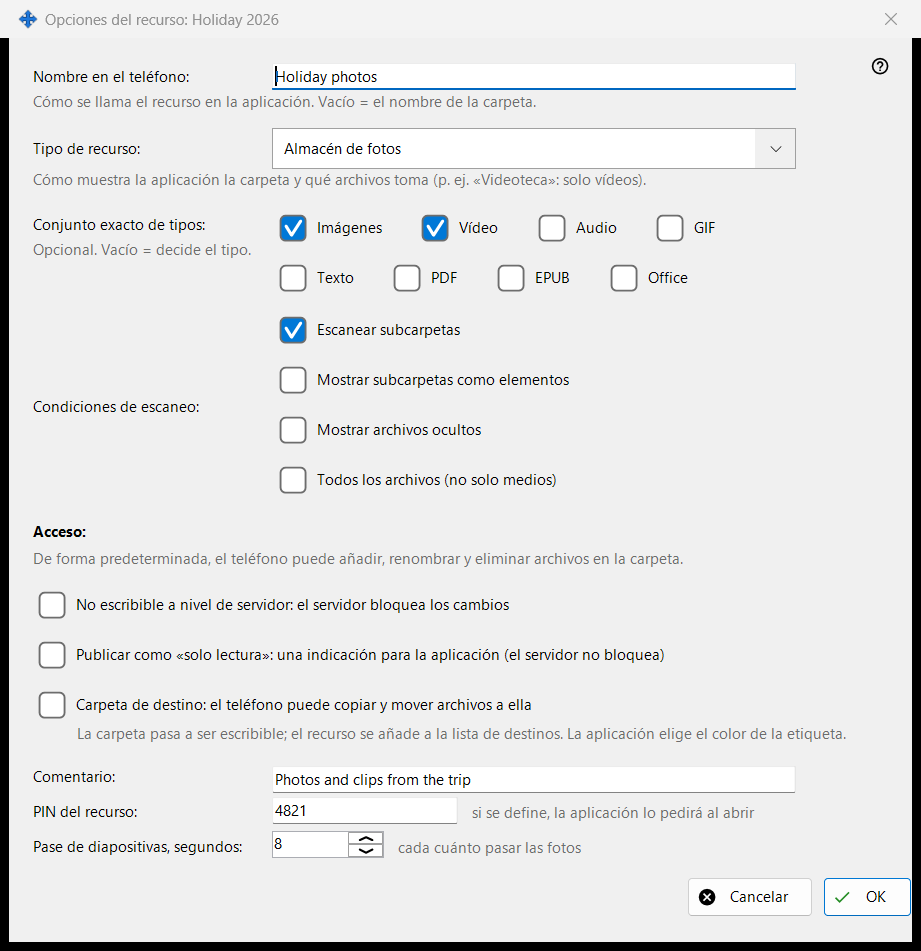
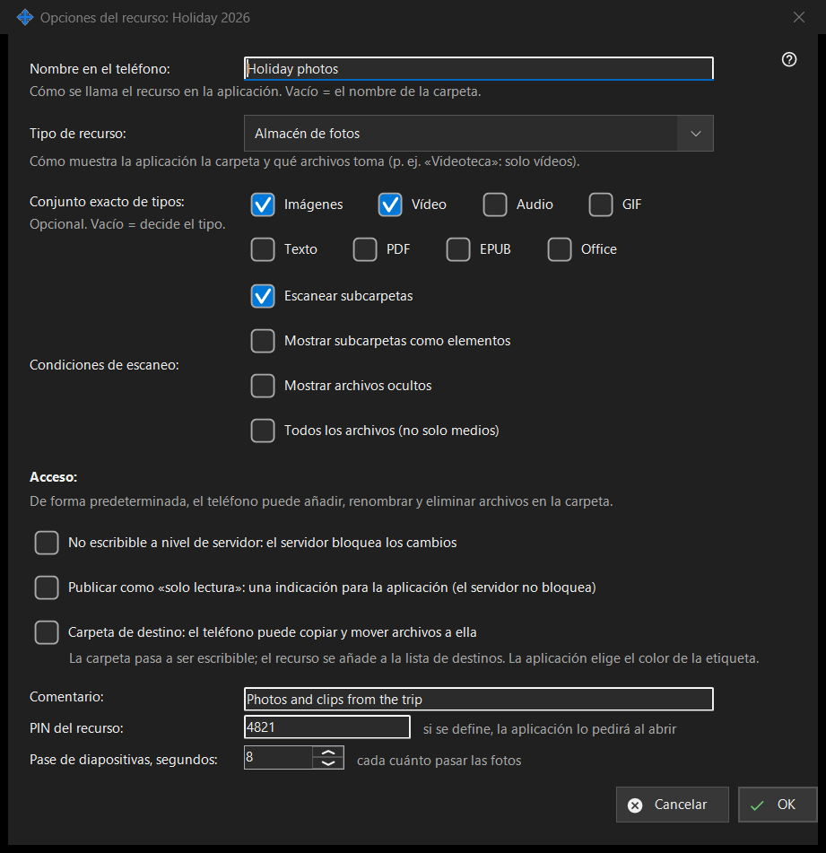

Opciones del recurso
Para qué sirve
Opciones de una carpeta compartida: su nombre en el teléfono, el tipo, qué archivos se muestran, quién puede cambiarlos y algunos extras. Se abre desde «Editar» en la ventana principal, desde una fila de carpeta y desde el asistente de recursos. El título real de la ventana termina con el nombre de la carpeta.


En este orden
- Fija el nombre que mostrará el teléfono.
- Elige el tipo de recurso o un conjunto exacto de medios.
- Fija las condiciones de exploración.
- Elige el acceso.
- Abre «Opciones avanzadas» para un comentario, un PIN y el intervalo de la presentación.
- Pulsa OK.
Los elementos
Nombre y tipo
«Nombre en el teléfono:» es el nombre con que aparece la carpeta en la aplicación; vacío significa el nombre de la carpeta. «Tipo de recurso:» ofrece Carpeta normal, Biblioteca de audio, Videoteca, Almacén de fotos y Documentos. «Conjunto exacto de tipos:» elige los tipos exactos (Imágenes, Vídeo, Audio, Texto, Todos los archivos); vacío significa que decide el tipo.
Condiciones de exploración
«Escanear subcarpetas», «Mostrar subcarpetas como elementos», «Mostrar archivos ocultos» y «Todos los archivos (no solo medios)».
Acceso
De forma predeterminada el teléfono puede añadir, renombrar y eliminar archivos en la carpeta. «Solo lectura» es un bloqueo real: el servidor rechaza los cambios. Una indicación de solo lectura solo le dice a la aplicación que oculte los botones de edición; el servidor no bloquea nada. Una carpeta de destino puede recibir copias y movimientos desde el teléfono; pasa a admitir escritura y entra en la lista de destinatarios, y su color lo elige la aplicación.
Opciones avanzadas
Un comentario (opcional), un PIN para el recurso (la aplicación lo pide al abrir el recurso) y el intervalo de la presentación en segundos. Los ajustes se envían al servidor cuando confirmas.
Ajustes del gestor · Ajustes de uso compartido SFTP · Ajustes del servidor de intercambio